Natural Language Processing papers From ELIZA to Transofrmers (to be organzied at some point) 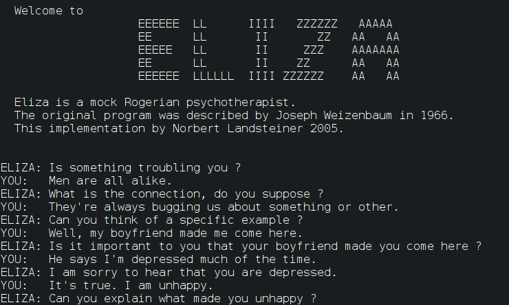 ELIZA: A Rogerian Psychiatrist Word2vec: Skip Gram and CBOW 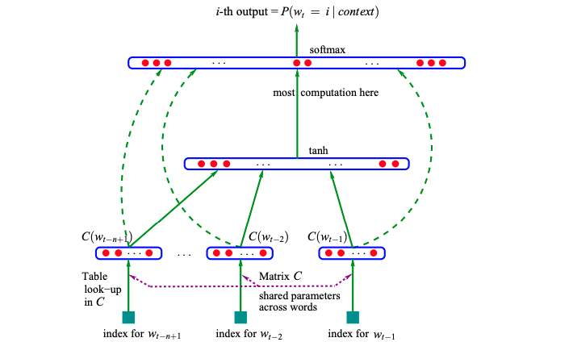 Dense Word Embeddings for NNs 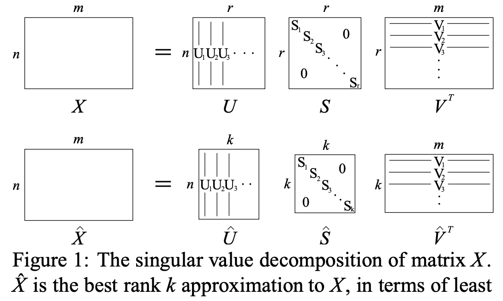 COALS: Semantics from Co-Occurance 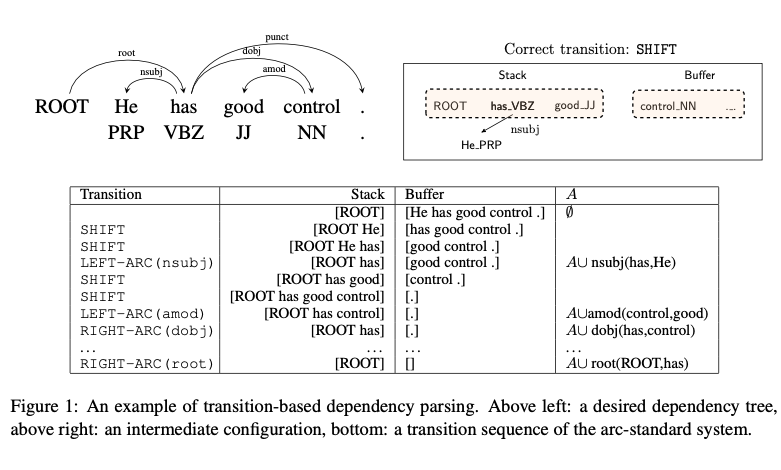 Greedy Transition Dependency Parsing 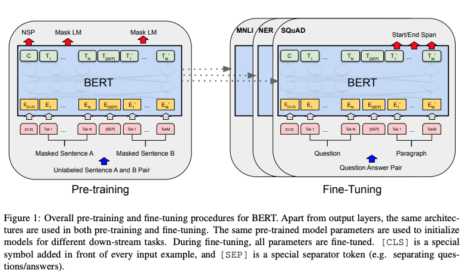 BERT: Bidirectional Transformers Adversarial Reading Comprehension No Context Question Answering 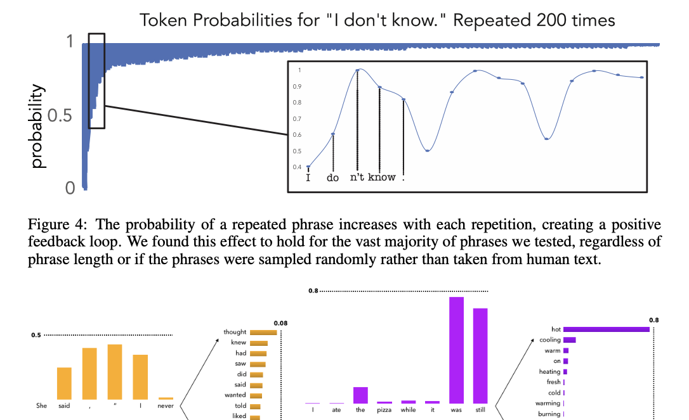 Natural Language Degeneration 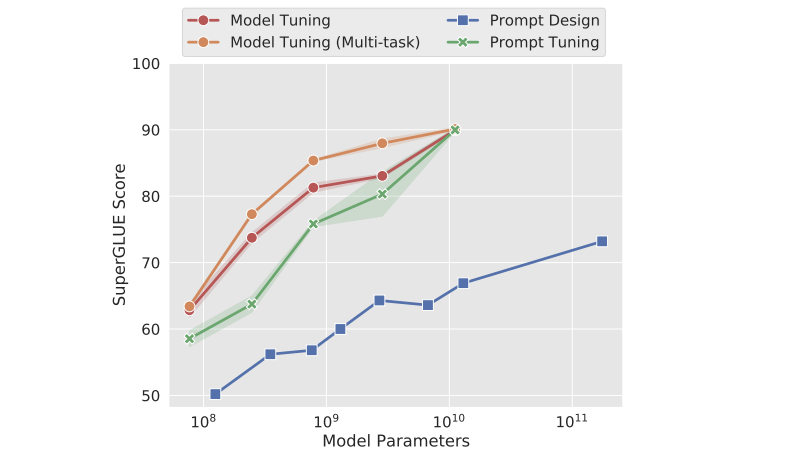 Parameter-Efficient Prompt Tuning 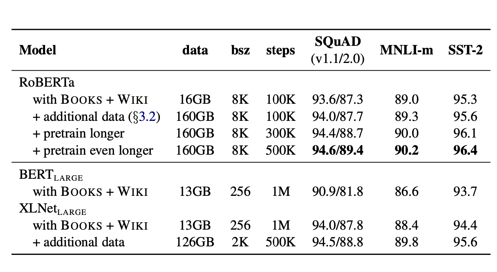 RoBERTa: Robust Pretraining Chain of Thought Prompting 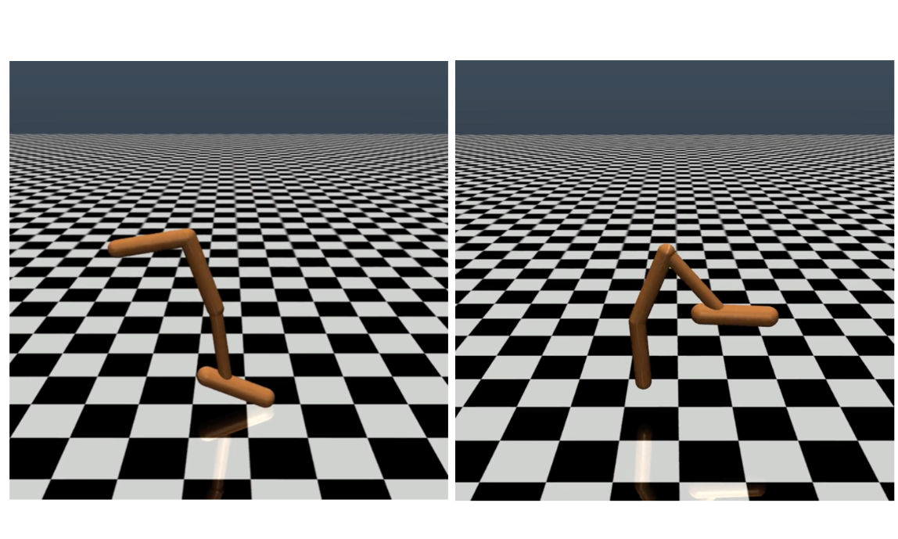 RL from Human Preferences 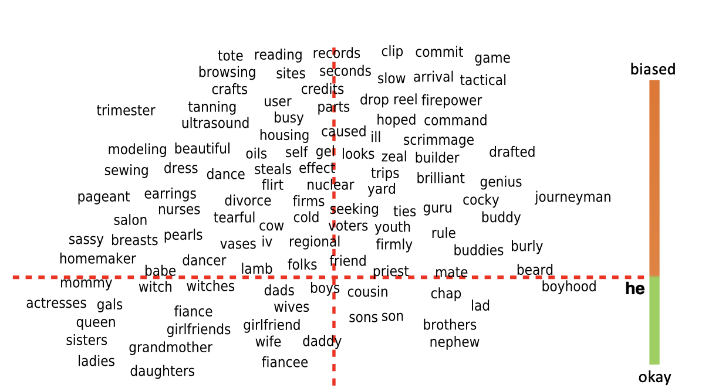 Debiasing Word Embeddings Optimizing Continuous Prompts Zero Shot Chain of Thought Open-Domain Question Answering Salient Span Masking 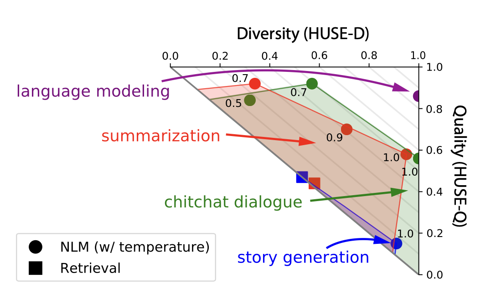 Combining Human and Statistical Evaluation Learning from QA Datasets 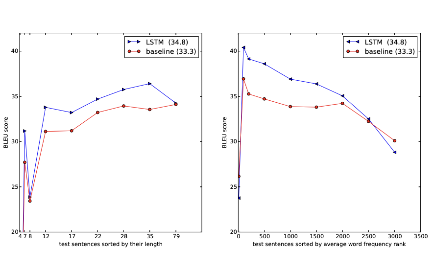 Seq2Seq with Neural Networks 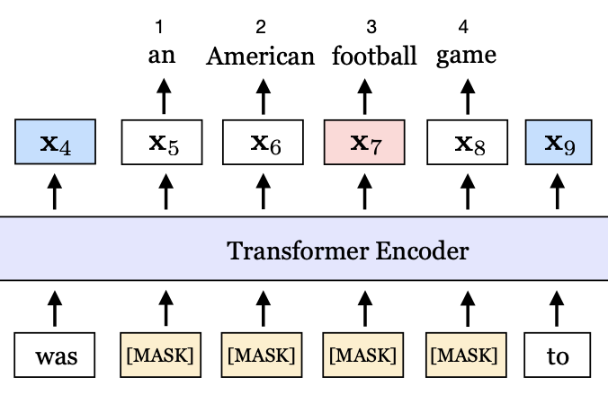 SpanBERT: Improving Pre-training